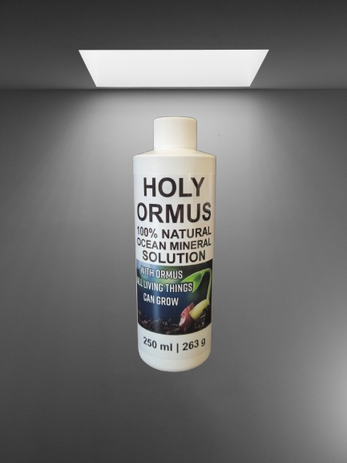

Discover the Essence of Ormus Minerals
“Ormus” or “Ormus Minerals” is the term we use to describe the base elements and minerals we extract from the ocean. Some of these elements are bonded to chlorine as mineral salts. Many mineral salts are created by the gradual breakdown of precious metals such as silver, gold, and platinum. Our Atomic Separation process causes the chlorine atoms to dissociate and allows us to extract the various minerals in the ocean in their original atomic form.
FAQ - Holy Ormus
At Holy Ormus, we are inspired by the elegance and beauty of nature. As Peter Gilmore beautifully stated, “I’m looking to nature for my inspiration. Letting the natural produce speak. There’s so much out there, so much elegance and beauty.” We believe that true inspiration comes from the natural world, and we strive to create products that reflect this philosophy. Below you'll find answers to some common questions about our products and philosophy.
HOLY ORMUS stands apart from other Ormus products by combining over 70 unique elements and minerals in their Ormus state, creating a harmonious blend unmatched in quality. HOLY ORMUS products contains over 70 unique elements and minerals in their Ormus state. The “Ormus state” can also be called a transition state. The unique properties of HOLY ORMUS transcend conventional scientific understanding, offering profound benefits that must be experienced to be fully appreciated.
*Dew
*Fresh Water Supplies
*Grapes
* Herbs
*Natural Foods
*Ocean Water - Experiments show that Ormus is most abundant in the sea. Not so strange when you consider that sea water covers 70% of the earth's surface.
*Oils
*Rain Water
*Rocks
*Salts
*Sand
*Spring Trap Water
*Well Trap Water
The most crucial elements of ormus are gold, copper, platinum, silver, nickel, mercury, rhodium, ruthenium, osmium, palladium, and iridium. There are very precious metals that have an atomic state that is diverse and they are mainly used to counteract dis-eases. These benefits of ormus assist the body in being health and in maintaining its physical fitness.
WHAT ARE SOME POSSIBLE ORMUS MINERALS BENEFITS?
Cells Deeply Nourished
Cells Hydrated
Cell Rejuvenation
Promotion of Cellular Regeneration
Promotion of Cellular Communication
Healthy DNA & RNA Support
Repaired tissues
Relief from muscle
Relief from joint pain
Reduced fatigue
Increased energy
Anti-aging support
Longevity
Enhanced Immune System Function
Essential minerals, vitamins, & amino acids replenished
Increased Electrolytes
Regularity
Improved digestion
Greater clarity and focus
Sense of being fully present
Thought manifestation
Developed intuition
Clearer thinking
Sense of calm
Heightened senses
Emotional healing
Improved vision
Sexual vitality
It contains a naturally balanced blend of eleven different M-state elements along with natural Magnesium, Calcium and other essential minerals.
Ormus Minerals is extracted from the Pacific Ocean water through a proprietary process.
Our products are entirely seawater derived, making these products 100% natural, vegan, GMO free, allergen free, and sustainably sourced.
What we can share is that our method is alkaline-based and involves no acidic reactions. The resting pH of our standard ormus product (Ocean Mineral Substrate) was tested at exactly 10.200.
Our HOLY ORMUS are vacuum sealed, bubble-wrapped, and sealed within a lined metallic foil bag which acts as a Faraday cage to reduce potentially harmful electromagnetic frequencies (EMF). Our shipping boxes are packed with biodegradable packing foam to prevent contents shifting during transport.
What are EMF areas?
Examples: Kitchen appliances, TV's, radios, computers, cell phones
*The ORMUS container must be used to store the ORMUS in it to provide the greatest protection from potential degradation from the surrounding environment.
*Refrigeration is NOT required so do not store in the refrigerator.
*A quiet cupboard or closet away from appliances is where the ORMUS is happiest.
*Store m-state materials in the dark away from direct sunlight or ultraviolet light.
*It is preferred that it be stored in the dark, in a bedroom or bathroom.
* Store your ORMUS away from extremes of heat and cold.
*Keep it away from bright light, especially fluorescent lighting and blacklights.
*It is best stored cool.
*Keep Ormus away from cell phones or portable phone base stations.
*If you live close to high tension electric transmission lines (within 500 feet) The Ormus bottle should be wrapped in at least three layers of aluminum foil and stored in a metal box, the thicker the better.
*A wooden box or cabinet is an excellent place to start, however a sturdy cardboard box will suffice if you cannot obtain a wooden one.
*Simply line the interior of the box with alternating layers of paper, plastic and aluminum foil, the more the merrier.
*Any type of paper will work, and a good, inexpensive source of suitable plastic would be some inexpensive "Report Covers" which any office supply store will yield.
*Two or three alternating layers of each material attached to each of the six interior surfaces will serve to maximize the potential of M-state materials stored within.
Ormus Minerals work BEST when taken daily.
I Take on an empty stomach.
After a few doses, your intuition will assist you in fine tuning the amount you take and how often.
Hold the manna under your tongue if you choose to not mix with water for a while before swallowing.
Always use a plastic spoon, preferably a plastic tablespoon, when taking your manna.
NEVER, EVER DRINK FROM THE BOTTLE! Manna is an extremely life-supporting and life-sustaining material, so any germs or other biological matter introduced into the bottle from your mouth can quickly grow and multiply and spoil your manna.
| Person Weight | Recommended Dosage |
|---|---|
| 75 lbs | 1/2 teaspoon 1-2X Daily |
| 150 lbs | 1 teaspoon 1-2X Daily |
| 225 lbs | 1.5 teaspoons 1-2X Daily |
| 300 lbs | 2 teaspoons 1-2X Daily |
CONSISTENCY IS KEY
Daily our bodies use vitamins and minerals to help it function properly. HOLY ORMUS Minerals help to rejuvenate our bodies' essential nutrients.
Taking ORMUS Minerals consistently will help our bodies have more energy to also help to maintain the body's well-being.
This is why many parents are turning to alternative treatments like ormus. Ormus and autism has been linked a number of times, not only in recent times but in ancient times as well.
Ormus is considered as one of the higher metals. It is made of various elements, including gold, which is believed to be used in ancient times to heighten awareness and increase intuition and perception.
Like ormus and autism, the effects of gold and other platinum metal to the endocrine system have been a controversial topic.
It is a well-known fact that gold salts have anti-inflammatory properties and it also help clear up extreme nervousness and excitability, which are two of the symptoms seen in patients diagnosed with autism.
There may be no scientific evidence to prove that ormus and autism are scientifically linked together, but testimonials from believers attested to the benefits of gold salts to psychologically ill and unstable children.
A. Yes. Animal testing that we have done with white mice has demonstrated that animals benefit greatly from Ormus supplementation. The daily dose for an animal should not exceed 8 drops for each 5 pounds of body weight.
| Pet Weighs (Pounds) | Recommended Maximum Daily Dosage | |
|---|---|---|
| Drops | Closest Teaspoon amounts | |
| 5 lbs | 18 | 1/16 teaspoon Daily |
| 10 lbs | 16 | 1/8 teaspoon Daily |
| 15 lbs | 24 | 1/5 teaspoons Daily |
| 20 lbs | 32 | 1/4 teaspoons Daily |
| 25 lbs | 40 | 1/3 teaspoons Daily |
| 30 lbs | 48 | 2/5 teaspoons Daily |
| 35 lbs | 56 | 1/2 teaspoons Daily |
| 40 lbs | 64 | 1/2 teaspoons Daily |
| 45 lbs | 72 | 3/5 teaspoons Daily |
| 50 lbs | 80 | 2/3 teaspoons Daily |
| 75 lbs | 115 | 1 teaspoons Daily |
You can split this dosage up to be given to your pet at 2 different times a day if you desire.
We suggest an experiment where you have 2 bowls of water out and add ormus to one and normal water in the second one and watch and see which one is empty the fastest. This will show you if you pet likes ORMUS or not.
Plant Dosage- 1 tablespoon per 1 gallon of water
Cataracts are the result of a degradation in the structure of the lens inside the eye.
The lens becomes less transparent due to several causes.
The nuclei of the cells in the lens can condense and form brown depositions that obscure eyesight.
Disruption in the structure of protein in the lens can turn it from transparent to opaque. Ormus and cataracts are related in this molecular level changes.
Ormus operates on a subatomic level affecting body cells with the high energy resonating from the monoatomic elements.
This high energy interaction between ormus and cataracts stimulates the protein in the cells of the eye lens, upping their functioning and the repairing properties inherent to the cell.
The effects between ormus and cataracts are also appreciated in the nucleus of eye cells.
It affects the RNA and DNA inside the cellular body, which contribute to the regeneration of ocular cells.
In fact, some believe that ormus even appears in the Bible as a somewhat magical substance called manna.
When considered, ormus and the Bible hold vastly powerful concepts, ideas, and properties that we have only begun to explore.
It is believed that the Biblical manna, consumed by the Israelites in the books of Exodus and Numbers is in fact ormus.
The ormus in the Bible contributed to the health and wellbeing of the Israelites during their forty-year trek through the desert and to the Promised Land.
The Bible describes Israelites grinding manna, or ormus, into fine powder and then baking it into cakes or wafers. God commanded the Israelites to only eat manna during their journey.
If Biblical manna could be in fact ormus, then ormus possesses amazing nutritional benefits.
Both ormus and the Bible are valuable tools to utilize during your spiritual journey.
If God commanded his chosen people to eat manna, which we now believe to be ormus, then it is fair to say that ormus could possibly be one of the best nutritional options available for both the spirit and body.
The consumption of manna is described primarily in the books of Exodus and Numbers in the Bible. Here are the key passages:
1. Exodus 16:14-36
This chapter explains how God provided manna to the Israelites during their journey in the wilderness after leaving Egypt. It describes what manna looked like, how it was collected, and the rules for gathering it (e.g., collecting only what was needed for the day and double portions for the Sabbath).
• Exodus 16:31:
“The people of Israel called the bread manna. It was white like coriander seed and tasted like wafers made with honey.”
2. Numbers 11:7-9
This passage also describes manna in more detail and discusses how the Israelites prepared it and consumed it.
• Numbers 11:7-8:
“The manna was like coriander seed and looked like resin. The people went around gathering it and then ground it in a hand mill or crushed it in a mortar. They cooked it in a pot or made it into loaves. And it tasted like something made with olive oil.” These verses provide a clear depiction of manna, its divine origin, and its role as sustenance for the Israelites during their time in the wilderness.
To be eligible for a return, your item must be unused and in the same condition that you received it. It must be in the original packaging with the induction seal unbroken. Please return the package to sender.
Refunds (if applicable)
Once your return is received and inspected, we will send you an email to notify you that we have received your returned item. We will also notify you of the approval or rejection of your refund.
If you are approved, then your refund will be processed, and a credit will automatically be applied to your credit card or original method of payment, within 7 days.
Late or missing refunds (if applicable)
If you haven’t received a refund yet, first check your bank account again.
Then contact your credit card company, it may take some time before your refund is officially posted.
Next contact your bank. There is often some processing time before a refund is posted.
If you’ve done all of this and you still have not received your refund yet, please contact us at INFO@HOLYORMUS.COM.
Exchanges (if applicable)
We only replace items if they are defective or damaged. If you need to exchange it for the same item, send us an email at info@HOLYORMUS.COM and send your item to:
—-
WHITE OMAR
1441 WOODMONT LANE
SUITE 309
ATLANTA, GEORGIA 30318
UNITED STATES OF AMERICA
—-
Shipping
To return your product, you should mail your product to:
—-
WHITE OMAR
1441 WOODMONT LANE
SUITE 309
ATLANTA, GEORGIA 30318
UNITED STATES OF AMERICA
—-
You will be responsible for paying for your own shipping costs for returning your item. Shipping costs are non-refundable Depending on where you live, the time it may take for your exchanged product to reach you, may vary.
If you are shipping an item over $75, you should consider using a trackable shipping service or purchasing shipping insurance. We don’t guarantee that we will receive your returned item.
-
 HOLY
HOLY
ORMUSDiscover the pure essence of nature with Holy Ormus
minerals, enhancing your well-being and vitality
with every drop
About Us
Omar Slim White, an author, inventor, spiritual teacher, herbalist, and entrepreneur, has always sought high-quality compounds that transform the body. Being vegan for over 20 years has allowed Omar to experiment with a wide variety of herbal compounds from around the world.
During his journey, he connected with Kevin Hay, the owner and founder of Vancouver Island Ormus. Their initial email exchange quickly led to a phone conversation filled with profound spiritual engagement and discussions about the transformative power of Ormus. Intrigued by the conversation, Omar decided to experiment with Kevin’s innovative product.
Through his exploration, Omar uncovered remarkable results that sparked even greater curiosity. After years of experimentation and observation, Omar realized the tremendous benefits people could gain from introducing high-level minerals into their systems.
This shared vision led Omar and Kevin to form a partnership, with an agreement that Omar would become the official distributor of Kevin’s Ormus products in the United States. From this collaboration, HOLY ORMUS was born, a brand dedicated to bringing these powerful minerals to a wider audience.